На 3ох автоматизованих системах при однакових умовах і незалежних умовах виготовляють деталі одного найменування. На першій лінії виготовили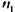деталей, з них
Завдання для самостійної роботи №2
На 3ох автоматизованих системах при однакових умовах і незалежних умовах виготовляють деталі одного найменування. На першій лінії виготовили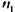деталей, з них  стандартних, на другому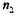деталей, з них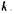стандартних, на третьому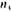деталей, з них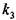стандартних.
стандартних, на другому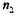деталей, з них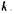стандартних, на третьому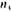деталей, з них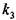стандартних.
Значений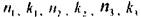взяти з таблиці:
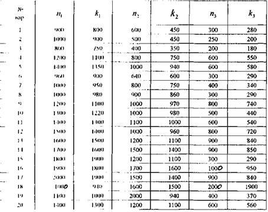
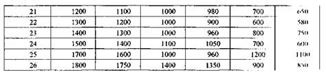